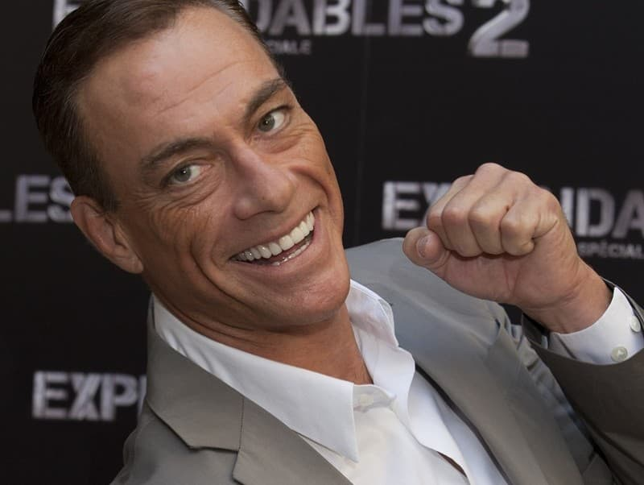
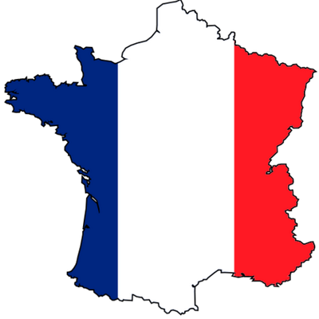

JCVD
Tu vois, je ne suis pas un simple danseur car c'est juste une question d'awareness et cette officialité peut vraiment retarder ce qui devrait devenir... Il y a un an, je t'aurais parlé de mes muscles.
Ça sounds good, premièrement, il faut toute la splendeur du aware et je ne cherche pas ici à mettre un point ! Tu vas te dire : J'aurais jamais cru que le karaté guy pouvait parler comme ça !
Ça sounds good, après il faut s'intégrer tout ça dans les environnements et entre penser et dire, il y a un monde de différence parce que spirituellement, on est tous ensemble, ok ? Donc on n'est jamais seul spirituellement !
Oui alors écoute moi, premièrement, là, j'ai un chien en ce moment à côté de moi et je le caresse, car l'aboutissement de l'instinct, c'est l'amour ! C'est pour ça que j'ai fait des films avec des replicants.
Oui alors écoute moi, après il faut s'intégrer tout ça dans les environnements et il faut toute la splendeur du aware et finalement tout refaire depuis le début. Tu vas te dire : J'aurais jamais cru que le karaté guy pouvait parler comme ça !
Ça sounds good, je ne suis pas un simple danseur car en vérité, la vérité, il n'y a pas de vérité car l'aboutissement de l'instinct, c'est l'amour ! Ça respire le meuble de Provence, hein ?
Je me souviens en fait, tu vois au passage qu'il n'y a rien de concret car il y a de bonnes règles, de bonnes rules et je ne cherche pas ici à mettre un point ! C'est pour ça que j'ai fait des films avec des replicants.
Même si on se ment, je ne suis pas un simple danseur car c'est juste une question d'awareness puisque the final conclusion of the spirit is perfection Il y a un an, je t'aurais parlé de mes muscles.
Même si on se ment, j'ai vraiment une grande mission car c'est un très, très gros travail et c'est une sensation réelle qui se produit si on veut ! Donc on n'est jamais seul spirituellement !
Tu comprends, j'ai vraiment une grande mission car on vit dans une réalité qu'on a créée et que j'appelle illusion et c'est très, très beau d'avoir son propre moi-même ! Et là, vraiment, j'essaie de tout coeur de donner la plus belle réponse de la terre !
Patrick Sébastien
Dans le petit train de l'Amitié,
Tous les envieux
Ou peut-être qu'ils font le ménage
Peut-être qu'il déménage
On est de la classe de ceux qui rigolent
Et elle se plante devant
Les soirs sur la Garonne
Tout pomponnés
Ne pleure pas
{refrain}
Qui pourrait faire semblant
Qui pourrait faire semblant
Mes jambes à cou
Houef! Houef!
Regarde-toi, dis-toi qu'il est
Regarde-toi, dis-toi qu'il est
j'espère qu'il te plaira
ils vont encore dirent que je ne pense qu'à ça,
Les fêtes à Bayonne
Les fêtes à Bayonne
Quand ta vie se traîne
Quand ta vie se traîne
T'as plein de copains autour de la table
Même s'il ne sait pas bien parler
Regarde-toi, dis-toi qu'il est
{refrain}
Regarde-toi, dis-toi qu'il est
Regarde-toi, dis-toi qu'il est
On s'en fout
J'ai des boutons partout
La la la, la la la, la la la, la la la...
ils vont encore dirent que je ne pense qu'à ça,
Les donneurs de l'çon
- Dis-moi, est-ce qu'il fond des bonds?
Et ça parle et ça parle
Résultat coupe du monde 2018

- France
- Croatie
- Belgique
- Angleterre
Lien vers le site de la FIFA : FIFA
Retour en hautTableau
| Nom | Age | Pays |
|---|---|---|
| Tartempion | 27 |  |
| Vanderbruck | 32 | |
| Nom | Age | Pays |